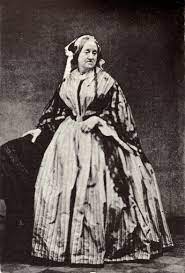
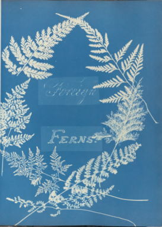
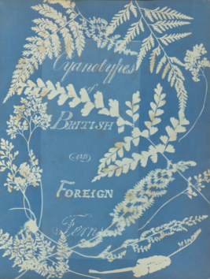

Biography
Anna Atkins was born Anna Children in 1799 in England. Her mother died shortly after her birth. Her father was a chemist and zoologist. He was employed as a libranian at the British Museum. She recieved a rigorious education from her father and began colleting botanical specimens.
She married John Pelly Atkins in 1825 and settled in Halstead Place in Kent. Atkins was interested in plants and had an extensive collection of dried plants. Her collection was so extensive she was offered membership in the Botanical Society of London.
Introduction to Photography
She and her husband were friends of Sir John Herschel who invented the cyanotype photographic process in 1842.
She published her book Photographs of British Algae: Cyanotype of her photographs in 3 volumes between 1843 and 1853. She later published two more books with photographs Cyanotypes of British and Foreign Ferns in 1853 and Cyanotypes of British and Foreign Flowering Plants and Ferns in 1854. While not overally popular at the time her book is considered one of the first publications of photographs. The few remaining copies are held in museums or private collections